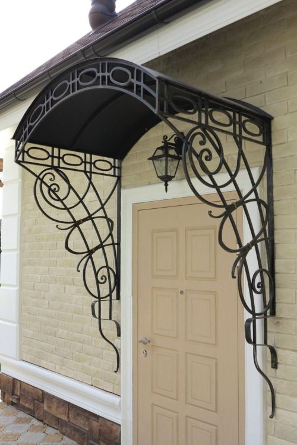
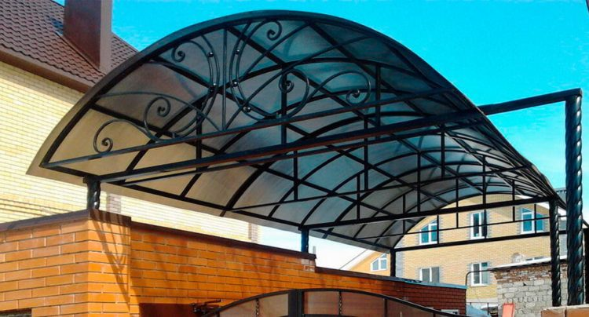
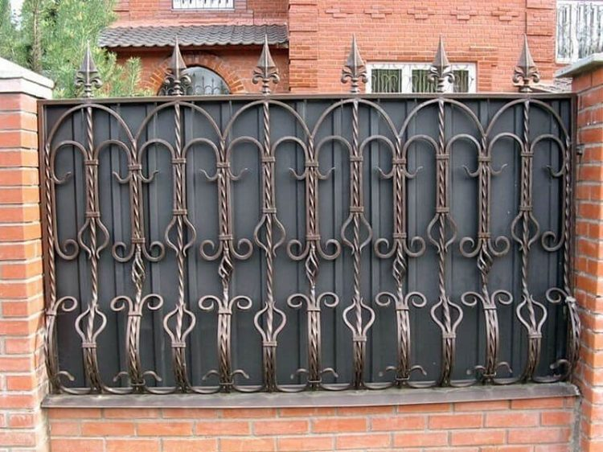
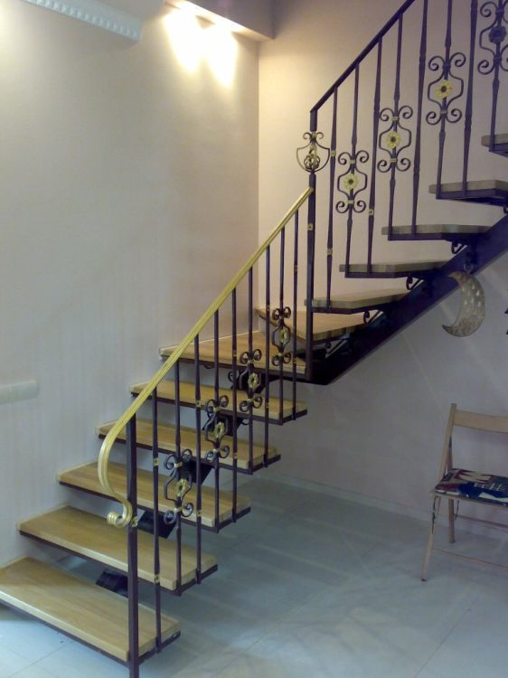
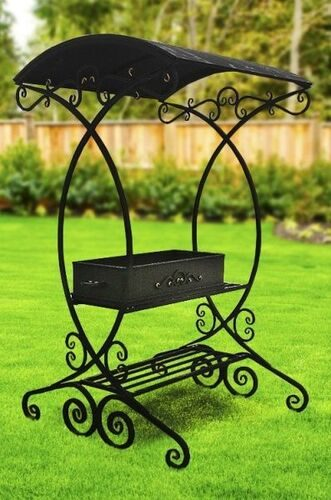
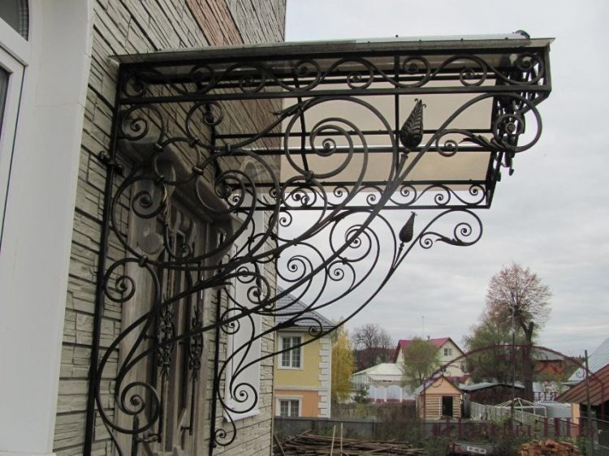
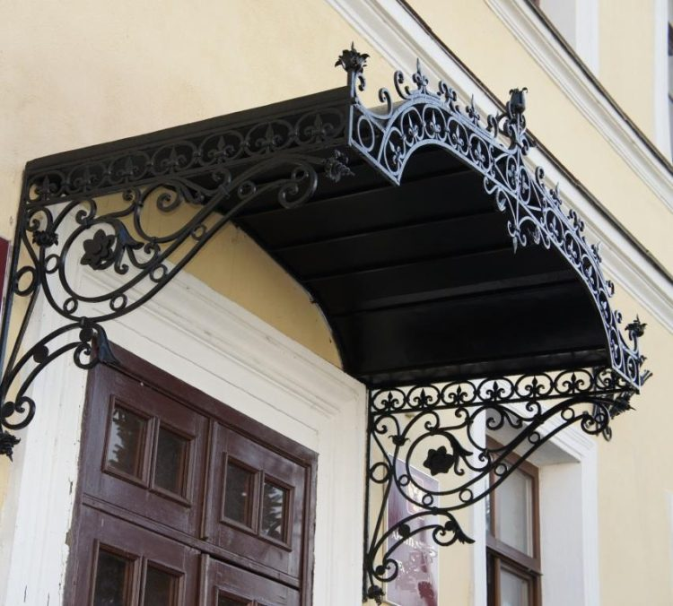

Ворота, заборы, перила, козырьки, навесы и мангалы, установленные в Москве и Подмосковье. У каждого объекта: задача, размеры, покрытие, срок и стоимость на момент заказа. Понравился объект: закажите такой же под свои размеры. В прототипе показаны 12 объектов, фильтры и сортировка работают по ним.
 Ворота
ВоротаВорота под кирпичные столбы заказчика, фонари на столбах, закладные под автоматику.
 Заборы
ЗаборыСтолбы 60 × 60 с бетонированием, калитка в том же рисунке.
 Перила
ПерилаЗамер по готовым ступеням, крепление в ступень, поручень из дуба.

КозырькиКронштейны в стену, скрытый водоотвод, подсветка.

НавесыСтойки 100 × 100, арочные фермы, сотовый поликарбонат 10 мм.
 Ворота
ВоротаФундамент под направляющую, привод, калитка отдельно.

ЗаборыОткрытое заполнение, столбы с заглушками-шарами.

ПерилаКрепление к бетону крыльца, поручень металлический.

МангалыТолщина стали 4 мм, столешница, крюки для инструмента.

КозырькиДля коммерческого объекта, договор и закрывающие документы.

НавесыКрепление к дому, водосток, поликарбонат бронза.
 Ворота
ВоротаЛистовой металл с кованым декором, замок Эльбор, фонари.

Замерщик знает особенности грунта и типовых столбов в вашем КП, а соседи могут показать наши ворота вживую.
Ворота с калиткой в Домодедово. Замерщик приехал на следующий день, привёз образцы краски, посчитал на месте. Сделали за три недели, поставили за день, цена как в договоре.
Забор 38 метров с профлистом. Понравилось, что показали похожий забор у соседей в Подольске до заказа. Столбы залили, секции повесили за два дня, мусор увезли.
Перила на лестницу в доме. Эскиз согласовали с двух правок, поручень из дуба подобрали под пол. Монтаж аккуратный. Минус звезда за перенос замера на день.
Укажите номер объекта или пришлите фото. Посчитаем с покраской, доставкой и монтажом, предложим дату замера.